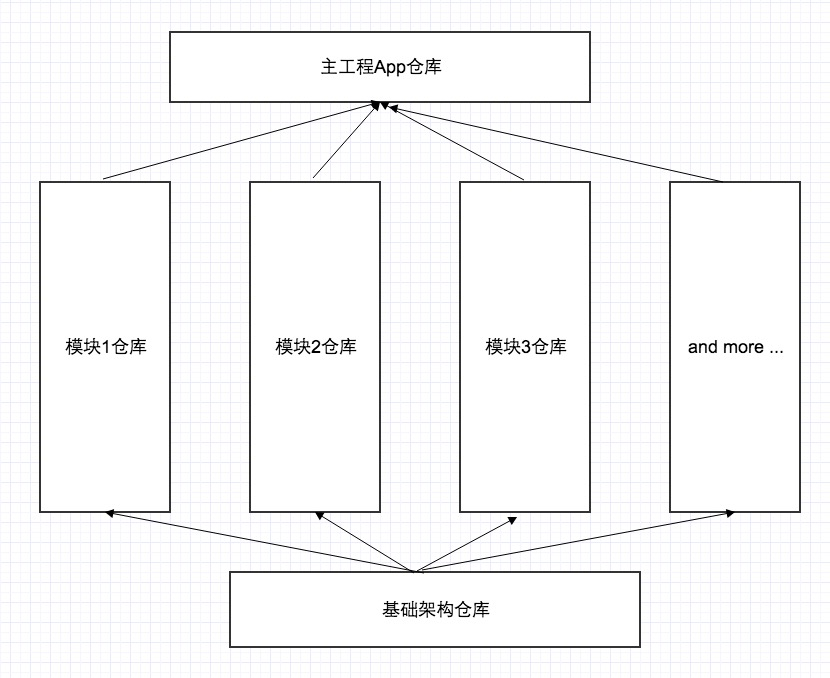
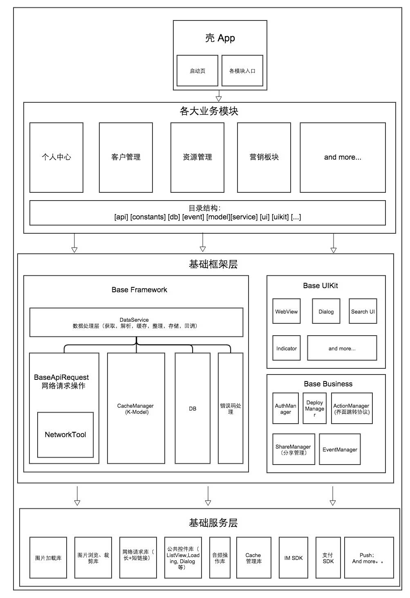

对于App架构的一点想法
• 技能
最近带领团队完成了一个项目的启动阶段。对于个人和团队来说，这一次的经历都与以往格外不同。
半年前，我在知乎提了一个问题
移动app大型项目的开发流程是怎样的，如何推进版本迭代？
虽然也算带过团队做项目，但是做的东西都是比较小，按照需求迭代开发就足够了。对于一个大型项目，几十人乃至更多人的研发团队, 从开发到交付的流程，模式应该是怎样的？！
这一次的经历，也算找到了一个自己的答案。
项目启动阶段, 我们能看到的东西是：
- 1) 四个月内必须完成整体项目
- 2）大致分为六七个子模块， 每个模块的需求量不亚于一个独立 App
- 3）尽快一个月内拿出一个初期基本可操作版本试用
- 4) App 团队人员总数， 两个端加起来不到十个人!
各团队讨论之后形成的目标：
- 1) 每个大模块垂直划分为三到四期
- 2) 移动端团队不同的阶段同时支持优先级最高的几个模块
- 3) 每三天到一周有一个版本可以试用
What Fuck!!!
在预启动阶段，预想到的第一个问题。 大家开发的流程怎么做! 以往的经验，做一个项目，三到五个人， 大家在一个仓库底下，互相提交代码， 大家都开发完才能生成一个版本。 但是现在不可以， 理想状态下，几个人正在开发上线第一个版本，另外几个人同时在开发第二个版本，互相之间不能有影响。
第一步 基于 Git 拆仓库。
不同的模块都处于独立的仓库下，利用 Android Studio 的 Module， iOS 下的 CocoaPods，每个模块都做成 SDK 的形式，能够独立运行。 壳 App 只需要确定各个模块 SDK 版本，然后引入就可以了。
仓库的分布，和模块的依赖如图: 
基于这个仓库，负责不同模块的同学只需要关注他负责的模块所在的仓库即可，不会受其他模块的进度所影响。
第二步，为了让业务模块的开发只聚焦在业务层上，我们需要把非业务的基础服务都梳理完整，并且确定业务开发的流程。
让所有人写出来的代码只在业务需求上有区分，在代码逻辑的流程上是统一的。
基于这个目标，团队的核心成员整体梳理并确定了项目基础框架，如下图所示： 
- 1) 通过一年来的不断积累，我们已经拥有一套比较完整的各种功能的基础组件库, 构成了这个项目的基础服务层；
- 2) 业务模块层最关心的是数据。对数据的操作统一都放在 DataService 中处理。 而业务模块内是使用 MVVM， 还是 MVP 的开发模式，我并不关心。DataService 中再根据当前业务数据的形式，以及优化的角度，使用网络，KModel 缓存，DB 处理数据；(PS: 后来看到关于猿题库的一篇文章，发现与他们的 DataController 的概念类似。链接)
- 3) Base Business 中封装了一些基础的业务模块。包含当前登陆用户的信息，设备信息，分享组件。以及模块间跳转的协议（PS：跳转协议使用 url schema 的形式，能够兼容内部跳转，以及从外部跳转。有点像阿里的统跳协议, 但没阿里那么复杂。）
后来看了 infoq 推得一遍关于微信 Android 客户端的架构演变的文章，发现我们现在的流程和微信的流程还是很类似的。
当做完这些基础框架的东西之后，发现其实这就是开源项目的开发方式，通过 fork 仓库，修改，发起 merge request 提交。
一个月来，包括后期加入的小伙伴，二十人左右的移动团队。 Android 和 iOS 两个平台，基本从零开始，建立起完整的基础框架，与设计团队建立起规范和样式库，完成第一期的需求开发，建立了 SDK 模块的版本发布工具， 壳工程的集成工具等。。
为团队的战斗力点赞！